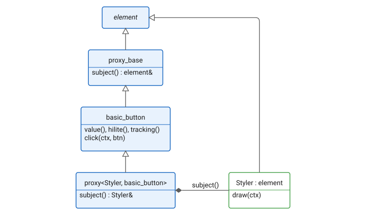
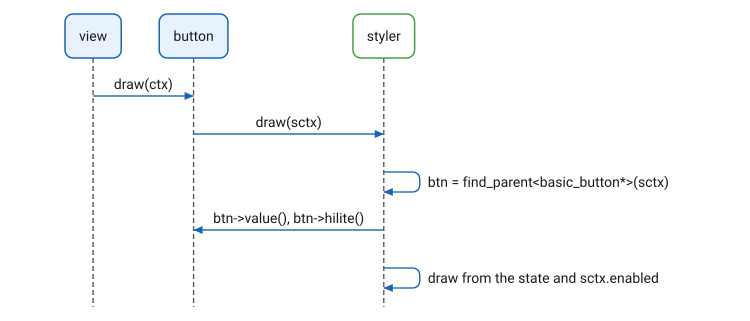
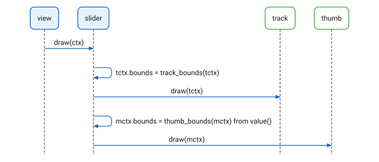
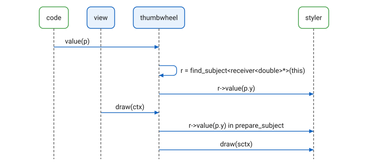

Styles
Overview
Elements separates what a control does from how it looks. The control holds the state and handles the input; a styler draws it. A control is a proxy over its styler, and a styler is any element: a stock styler from the pages that follow, a composition of other elements, or a class of your own.

The split lets one behavior carry many looks and one look serve several
behaviors. Each control below is toggle_button over a different
styler:

A styler holds no state of the control. It learns the state in one of three ways: it reads it from the control, the control places it, or the control passes the value to it.
Reading the State
A styler finds its control with find_parent (see
Traversal) and reads the state from it.
The control forwards draw to the styler in a context of the
styler’s own, whose parent leads back to the control’s:

Most stock stylers work this way. What each control offers:
| Control | State |
|---|---|
|
|
|
|
|
|
|
|
A styler takes the enabled state from ctx.enabled, not from the
control. ctx.enabled is false when the control is disabled, and also
when any element it is drawn in is disabled, such as a tile disabled as a
whole.
When find_parent finds no control, the styler draws nothing. A styler
outside its control is harmless.
Placement
A control with several parts may lay its stylers out from its state. The slider draws its track and its thumb, each in a context of its own, and computes the thumb’s bounds from its value. The thumb and the track draw within the bounds they are given and need no state:

The marks and labels of sliders and dials work the same way: they are proxies that adjust the bounds of what they enclose.
Receiving the Value
A control may pass its value to a styler that is a
receiver. The thumbwheel does: whenever its
value is set, and before each call it forwards, it passes the value to
its styler. A receiver<double> receives y; a receiver<point>
receives the whole point. The receiver is found with find_subject, so
it may be wrapped in other proxies. draw_value<T> is a receiver that
draws the value with a given function.

The sprite stylers, sprite_button_styler and
sprite_dial_styler, derive from the control itself and draw a sprite
from this→value(). They are controls with a drawing of their own
rather than stylers in the sense above.
|
Example
A styler that draws a toggle as a lamp: gold when on, dark when off, grey when disabled.
struct lamp_styler : element
{
view_limits limits(basic_context const&) const override
{
return {{24, 24}, {24, 24}};
}
void draw(context const& ctx) override
{
auto btn = find_parent<basic_button*>(ctx);
if (!btn)
return;
auto& cnv = ctx.canvas;
cnv.add_circle({center_point(ctx.bounds), 10});
cnv.fill_style(
!ctx.enabled ? colors::gray[40] :
btn->value() ? colors::gold :
colors::gray[20]);
cnv.fill();
}
};
auto lamp = toggle_button(lamp_styler{});
Copyright (c) 2014-2026 Joel de Guzman. All rights reserved. Distributed under the MIT License